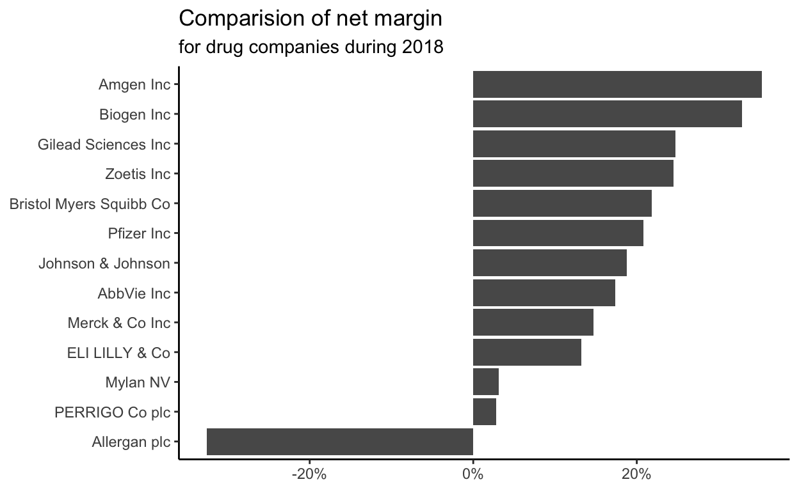

Code for Quiz 5. More practice with dplyr functions.
drug_cos.csv in to R and assign it to drug_cos.drug_cos <- read_csv("https://estanny.com/static/week5/drug_cos.csv")
glimpse() to get a glimpse of your data.glimpse(drug_cos)
Rows: 104
Columns: 9
$ ticker <chr> "ZTS", "ZTS", "ZTS", "ZTS", "ZTS", "ZTS", "ZTS…
$ name <chr> "Zoetis Inc", "Zoetis Inc", "Zoetis Inc", "Zoe…
$ location <chr> "New Jersey; U.S.A", "New Jersey; U.S.A", "New…
$ ebitdamargin <dbl> 0.149, 0.217, 0.222, 0.238, 0.182, 0.335, 0.36…
$ grossmargin <dbl> 0.610, 0.640, 0.634, 0.641, 0.635, 0.659, 0.66…
$ netmargin <dbl> 0.058, 0.101, 0.111, 0.122, 0.071, 0.168, 0.16…
$ ros <dbl> 0.101, 0.171, 0.176, 0.195, 0.140, 0.286, 0.32…
$ roe <dbl> 0.069, 0.113, 0.612, 0.465, 0.285, 0.587, 0.48…
$ year <dbl> 2011, 2012, 2013, 2014, 2015, 2016, 2017, 2018…distinct() to subset distinct rows.drug_cos %>%
distinct(year)
# A tibble: 8 x 1
year
<dbl>
1 2011
2 2012
3 2013
4 2014
5 2015
6 2016
7 2017
8 2018count() to count observations by group.drug_cos %>%
count(year)
# A tibble: 8 x 2
year n
* <dbl> <int>
1 2011 13
2 2012 13
3 2013 13
4 2014 13
5 2015 13
6 2016 13
7 2017 13
8 2018 13drug_cos %>%
count(name)
# A tibble: 13 x 2
name n
* <chr> <int>
1 AbbVie Inc 8
2 Allergan plc 8
3 Amgen Inc 8
4 Biogen Inc 8
5 Bristol Myers Squibb Co 8
6 ELI LILLY & Co 8
7 Gilead Sciences Inc 8
8 Johnson & Johnson 8
9 Merck & Co Inc 8
10 Mylan NV 8
11 PERRIGO Co plc 8
12 Pfizer Inc 8
13 Zoetis Inc 8drug_cos %>%
count(ticker, name)
# A tibble: 13 x 3
ticker name n
<chr> <chr> <int>
1 ABBV AbbVie Inc 8
2 AGN Allergan plc 8
3 AMGN Amgen Inc 8
4 BIIB Biogen Inc 8
5 BMY Bristol Myers Squibb Co 8
6 GILD Gilead Sciences Inc 8
7 JNJ Johnson & Johnson 8
8 LLY ELI LILLY & Co 8
9 MRK Merck & Co Inc 8
10 MYL Mylan NV 8
11 PFE Pfizer Inc 8
12 PRGO PERRIGO Co plc 8
13 ZTS Zoetis Inc 8filter() to extract rows that meet criteria# A tibble: 26 x 9
ticker name location ebitdamargin grossmargin netmargin ros
<chr> <chr> <chr> <dbl> <dbl> <dbl> <dbl>
1 ZTS Zoet… New Jer… 0.222 0.634 0.111 0.176
2 ZTS Zoet… New Jer… 0.379 0.672 0.245 0.326
3 PRGO PERR… Ireland 0.236 0.362 0.125 0.19
4 PRGO PERR… Ireland 0.178 0.387 0.028 0.088
5 PFE Pfiz… New Yor… 0.634 0.814 0.427 0.51
6 PFE Pfiz… New Yor… 0.34 0.79 0.208 0.221
7 MYL Myla… United … 0.228 0.44 0.09 0.153
8 MYL Myla… United … 0.258 0.35 0.031 0.074
9 MRK Merc… New Jer… 0.282 0.615 0.1 0.123
10 MRK Merc… New Jer… 0.313 0.681 0.147 0.206
# … with 16 more rows, and 2 more variables: roe <dbl>, year <dbl># A tibble: 52 x 9
ticker name location ebitdamargin grossmargin netmargin ros
<chr> <chr> <chr> <dbl> <dbl> <dbl> <dbl>
1 ZTS Zoet… New Jer… 0.217 0.64 0.101 0.171
2 ZTS Zoet… New Jer… 0.238 0.641 0.122 0.195
3 ZTS Zoet… New Jer… 0.335 0.659 0.168 0.286
4 ZTS Zoet… New Jer… 0.379 0.672 0.245 0.326
5 PRGO PERR… Ireland 0.226 0.345 0.127 0.183
6 PRGO PERR… Ireland 0.157 0.371 0.059 0.104
7 PRGO PERR… Ireland -0.791 0.389 -0.76 -0.877
8 PRGO PERR… Ireland 0.178 0.387 0.028 0.088
9 PFE Pfiz… New Yor… 0.447 0.82 0.267 0.307
10 PFE Pfiz… New Yor… 0.359 0.807 0.184 0.247
# … with 42 more rows, and 2 more variables: roe <dbl>, year <dbl># A tibble: 16 x 9
ticker name location ebitdamargin grossmargin netmargin ros
<chr> <chr> <chr> <dbl> <dbl> <dbl> <dbl>
1 PFE Pfiz… New Yor… 0.371 0.795 0.164 0.223
2 PFE Pfiz… New Yor… 0.447 0.82 0.267 0.307
3 PFE Pfiz… New Yor… 0.634 0.814 0.427 0.51
4 PFE Pfiz… New Yor… 0.359 0.807 0.184 0.247
5 PFE Pfiz… New Yor… 0.289 0.803 0.142 0.183
6 PFE Pfiz… New Yor… 0.267 0.767 0.137 0.158
7 PFE Pfiz… New Yor… 0.353 0.786 0.406 0.233
8 PFE Pfiz… New Yor… 0.34 0.79 0.208 0.221
9 MYL Myla… United … 0.245 0.418 0.088 0.161
10 MYL Myla… United … 0.244 0.428 0.094 0.163
11 MYL Myla… United … 0.228 0.44 0.09 0.153
12 MYL Myla… United … 0.242 0.457 0.12 0.169
13 MYL Myla… United … 0.243 0.447 0.09 0.133
14 MYL Myla… United … 0.19 0.424 0.043 0.052
15 MYL Myla… United … 0.272 0.402 0.058 0.121
16 MYL Myla… United … 0.258 0.35 0.031 0.074
# … with 2 more variables: roe <dbl>, year <dbl>select() to select, rename and reorder columnsticker, name and rosdrug_cos %>%
select(ticker, name, ros)
# A tibble: 104 x 3
ticker name ros
<chr> <chr> <dbl>
1 ZTS Zoetis Inc 0.101
2 ZTS Zoetis Inc 0.171
3 ZTS Zoetis Inc 0.176
4 ZTS Zoetis Inc 0.195
5 ZTS Zoetis Inc 0.14
6 ZTS Zoetis Inc 0.286
7 ZTS Zoetis Inc 0.321
8 ZTS Zoetis Inc 0.326
9 PRGO PERRIGO Co plc 0.178
10 PRGO PERRIGO Co plc 0.183
# … with 94 more rowsselect to exclude columns ticker, name and rosdrug_cos %>%
select(-ticker, -name, -ros)
# A tibble: 104 x 6
location ebitdamargin grossmargin netmargin roe year
<chr> <dbl> <dbl> <dbl> <dbl> <dbl>
1 New Jersey; U.S.A 0.149 0.61 0.058 0.069 2011
2 New Jersey; U.S.A 0.217 0.64 0.101 0.113 2012
3 New Jersey; U.S.A 0.222 0.634 0.111 0.612 2013
4 New Jersey; U.S.A 0.238 0.641 0.122 0.465 2014
5 New Jersey; U.S.A 0.182 0.635 0.071 0.285 2015
6 New Jersey; U.S.A 0.335 0.659 0.168 0.587 2016
7 New Jersey; U.S.A 0.366 0.666 0.163 0.488 2017
8 New Jersey; U.S.A 0.379 0.672 0.245 0.694 2018
9 Ireland 0.216 0.343 0.123 0.248 2011
10 Ireland 0.226 0.345 0.127 0.236 2012
# … with 94 more rowsselectstart with drug_cos THEN
change the name of location to headquarter
put the columns in this order: year, ticker, headquarter, netmargin, roe
drug_cos %>%
select(year, ticker, headquarter =location, netmargin, roe )
# A tibble: 104 x 5
year ticker headquarter netmargin roe
<dbl> <chr> <chr> <dbl> <dbl>
1 2011 ZTS New Jersey; U.S.A 0.058 0.069
2 2012 ZTS New Jersey; U.S.A 0.101 0.113
3 2013 ZTS New Jersey; U.S.A 0.111 0.612
4 2014 ZTS New Jersey; U.S.A 0.122 0.465
5 2015 ZTS New Jersey; U.S.A 0.071 0.285
6 2016 ZTS New Jersey; U.S.A 0.168 0.587
7 2017 ZTS New Jersey; U.S.A 0.163 0.488
8 2018 ZTS New Jersey; U.S.A 0.245 0.694
9 2011 PRGO Ireland 0.123 0.248
10 2012 PRGO Ireland 0.127 0.236
# … with 94 more rowsUse inputs from your quiz question filter and select and replace SEE QUIZ with inputs from your quiz and replace the ??? in the code
drug_cos THENticker, year and ros# A tibble: 24 x 3
ticker year ros
<chr> <dbl> <dbl>
1 PFE 2011 0.223
2 PFE 2012 0.307
3 PFE 2013 0.51
4 PFE 2014 0.247
5 PFE 2015 0.183
6 PFE 2016 0.158
7 PFE 2017 0.233
8 PFE 2018 0.221
9 MRK 2011 0.15
10 MRK 2012 0.182
# … with 14 more rowsdrug_cos THENticker, netmargin and roe. Change the name of roe to return_on_equitydrug_cos %>%
???(??? %in% c("???", "???")) %>%
???(ticker, ???, ??? = roe)select ranges of columnsdrug_cos %>%
select(ebitdamargin:netmargin)
# A tibble: 104 x 3
ebitdamargin grossmargin netmargin
<dbl> <dbl> <dbl>
1 0.149 0.61 0.058
2 0.217 0.64 0.101
3 0.222 0.634 0.111
4 0.238 0.641 0.122
5 0.182 0.635 0.071
6 0.335 0.659 0.168
7 0.366 0.666 0.163
8 0.379 0.672 0.245
9 0.216 0.343 0.123
10 0.226 0.345 0.127
# … with 94 more rowsdrug_cos %>%
select(4:6)
# A tibble: 104 x 3
ebitdamargin grossmargin netmargin
<dbl> <dbl> <dbl>
1 0.149 0.61 0.058
2 0.217 0.64 0.101
3 0.222 0.634 0.111
4 0.238 0.641 0.122
5 0.182 0.635 0.071
6 0.335 0.659 0.168
7 0.366 0.666 0.163
8 0.379 0.672 0.245
9 0.216 0.343 0.123
10 0.226 0.345 0.127
# … with 94 more rowsselect helper functionsstarts_with("abc") matches columns start with “abc”
ends_with("abc") matches columns end with “abc”
contains("abc") matches columns contain “abc”
drug_cos %>%
select(ticker, contains("locat"))
# A tibble: 104 x 2
ticker location
<chr> <chr>
1 ZTS New Jersey; U.S.A
2 ZTS New Jersey; U.S.A
3 ZTS New Jersey; U.S.A
4 ZTS New Jersey; U.S.A
5 ZTS New Jersey; U.S.A
6 ZTS New Jersey; U.S.A
7 ZTS New Jersey; U.S.A
8 ZTS New Jersey; U.S.A
9 PRGO Ireland
10 PRGO Ireland
# … with 94 more rowsdrug_cos %>%
select(ticker, starts_with("r"))
# A tibble: 104 x 3
ticker ros roe
<chr> <dbl> <dbl>
1 ZTS 0.101 0.069
2 ZTS 0.171 0.113
3 ZTS 0.176 0.612
4 ZTS 0.195 0.465
5 ZTS 0.14 0.285
6 ZTS 0.286 0.587
7 ZTS 0.321 0.488
8 ZTS 0.326 0.694
9 PRGO 0.178 0.248
10 PRGO 0.183 0.236
# … with 94 more rowsdrug_cos %>%
select(year, ends_with("margin"))
# A tibble: 104 x 4
year ebitdamargin grossmargin netmargin
<dbl> <dbl> <dbl> <dbl>
1 2011 0.149 0.61 0.058
2 2012 0.217 0.64 0.101
3 2013 0.222 0.634 0.111
4 2014 0.238 0.641 0.122
5 2015 0.182 0.635 0.071
6 2016 0.335 0.659 0.168
7 2017 0.366 0.666 0.163
8 2018 0.379 0.672 0.245
9 2011 0.216 0.343 0.123
10 2012 0.226 0.345 0.127
# … with 94 more rowsgroup_by to set up data for operations by groupgroup_bydrug_cos %>%
group_by(ticker)
# A tibble: 104 x 9
# Groups: ticker [13]
ticker name location ebitdamargin grossmargin netmargin ros
<chr> <chr> <chr> <dbl> <dbl> <dbl> <dbl>
1 ZTS Zoet… New Jer… 0.149 0.61 0.058 0.101
2 ZTS Zoet… New Jer… 0.217 0.64 0.101 0.171
3 ZTS Zoet… New Jer… 0.222 0.634 0.111 0.176
4 ZTS Zoet… New Jer… 0.238 0.641 0.122 0.195
5 ZTS Zoet… New Jer… 0.182 0.635 0.071 0.14
6 ZTS Zoet… New Jer… 0.335 0.659 0.168 0.286
7 ZTS Zoet… New Jer… 0.366 0.666 0.163 0.321
8 ZTS Zoet… New Jer… 0.379 0.672 0.245 0.326
9 PRGO PERR… Ireland 0.216 0.343 0.123 0.178
10 PRGO PERR… Ireland 0.226 0.345 0.127 0.183
# … with 94 more rows, and 2 more variables: roe <dbl>, year <dbl>drug_cos %>%
group_by(year)
# A tibble: 104 x 9
# Groups: year [8]
ticker name location ebitdamargin grossmargin netmargin ros
<chr> <chr> <chr> <dbl> <dbl> <dbl> <dbl>
1 ZTS Zoet… New Jer… 0.149 0.61 0.058 0.101
2 ZTS Zoet… New Jer… 0.217 0.64 0.101 0.171
3 ZTS Zoet… New Jer… 0.222 0.634 0.111 0.176
4 ZTS Zoet… New Jer… 0.238 0.641 0.122 0.195
5 ZTS Zoet… New Jer… 0.182 0.635 0.071 0.14
6 ZTS Zoet… New Jer… 0.335 0.659 0.168 0.286
7 ZTS Zoet… New Jer… 0.366 0.666 0.163 0.321
8 ZTS Zoet… New Jer… 0.379 0.672 0.245 0.326
9 PRGO PERR… Ireland 0.216 0.343 0.123 0.178
10 PRGO PERR… Ireland 0.226 0.345 0.127 0.183
# … with 94 more rows, and 2 more variables: roe <dbl>, year <dbl>summarize to calculate summary statisticsroe for all companiesdrug_cos %>%
summarize( max_roe = max(roe))
# A tibble: 1 x 1
max_roe
<dbl>
1 1.31roe for each yeardrug_cos %>%
group_by(year) %>%
summarize( max_roe = max(roe))
# A tibble: 8 x 2
year max_roe
* <dbl> <dbl>
1 2011 0.451
2 2012 0.69
3 2013 1.13
4 2014 0.828
5 2015 1.31
6 2016 1.11
7 2017 0.932
8 2018 0.694roe for each tickerdrug_cos %>%
group_by(ticker) %>%
summarize( max_roe = max(roe))
# A tibble: 13 x 2
ticker max_roe
* <chr> <dbl>
1 ABBV 1.31
2 AGN 0.184
3 AMGN 0.585
4 BIIB 0.334
5 BMY 0.373
6 GILD 1.04
7 JNJ 0.244
8 LLY 0.306
9 MRK 0.248
10 MYL 0.283
11 PFE 0.342
12 PRGO 0.248
13 ZTS 0.694Mean for year
Find the mean SEE QUIZ for each year and call the variable mean_SEE QUIZ
Extract the mean for SEE QUIZ
drug_cos %>%
???(???) %>%
???(??? = ???(???)) %>%
filter( year == ???)Median for year
Find the median SEE QUIZ for each year and call the variable median_SEE QUIZ
Extract the median for SEE QUIZ
drug_cos %>%
???(???) %>%
???(??? = ???(???)) %>%
filter(year == ???)drug_cos %>%
filter(year == 2018) %>%
ggplot(aes(x = netmargin, y = reorder(name, netmargin))) +
geom_col() +
scale_x_continuous(labels = scales::percent) +
labs(title = "Comparision of net margin",
subtitle = "for drug companies during 2018",
x = NULL, y = NULL) +
theme_classic()

drug_cos %>%
filter(ticker == "PFE") %>%
ggplot(aes(x = year, y = netmargin)) +
geom_col() +
scale_y_continuous(labels = scales::percent) +
labs(title = "Comparision of net margin",
subtitle = "for Pfizer from 2011 to 2018",
x = NULL, y = NULL) +
theme_classic()
ggsave(filename = "preview.png",
path = here::here("_posts", "2021-02-20-data-manipulation"))